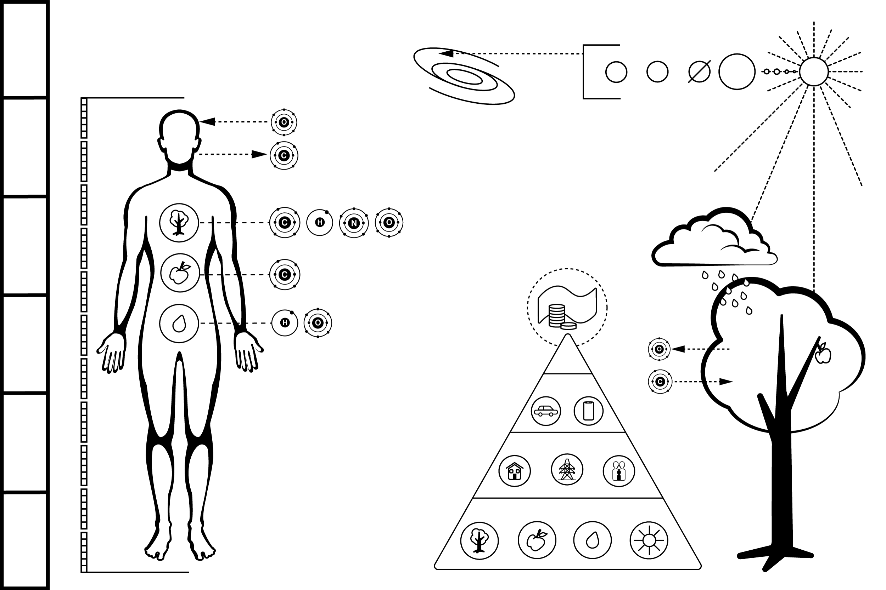
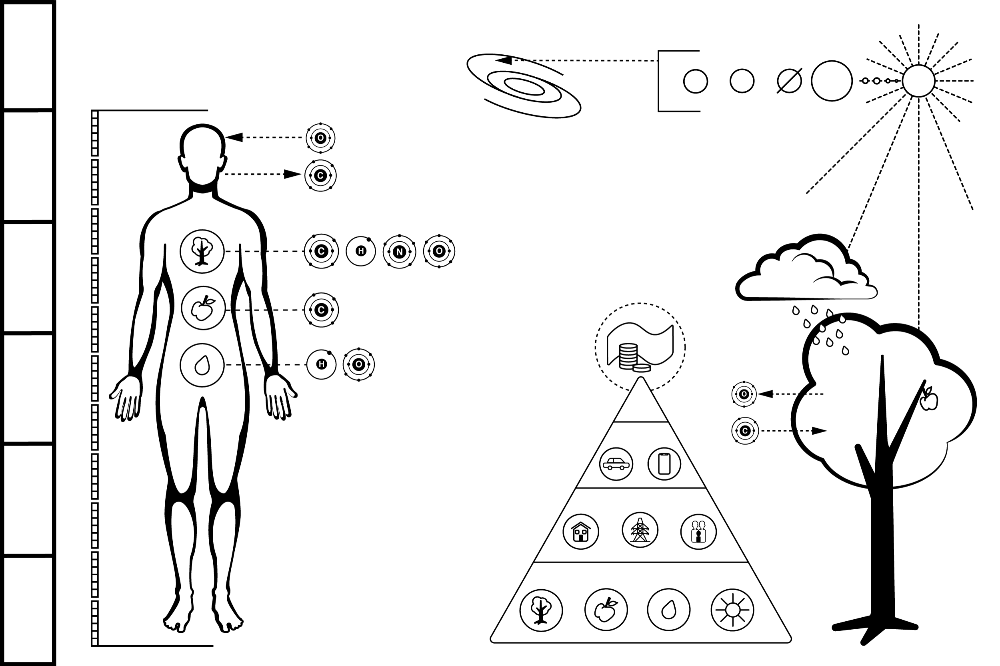

MY PORTFOLIO
Project 1: Pioneer Plaque
 

The goal of this project was to redesign the Pioneer Plaques which were placed on board the 1972 Pioneer 10 and 1973 Pioneer 11 spacecraft, featuring a pictorial message, in case either Pioneer 10 or 11 was intercepted by intelligent extraterrestrial life. In designing the plaque I sought to simplify the essence of humanity and use simple pictorial language to communicate. I focused on representing a few key elements: The size of an average human, the core elements we need to survive, our place in the universe and our value system.
I used icons to show the core elements we need for survival and showed how those elements combined to create tangibele objects like trees, water and food. I also sought to provide context by repeating elements throughout the plaque. In this way, if alien's theoretically recognized one element, they would be able to connect the dots easier to figure out the other elements.